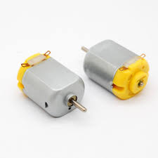
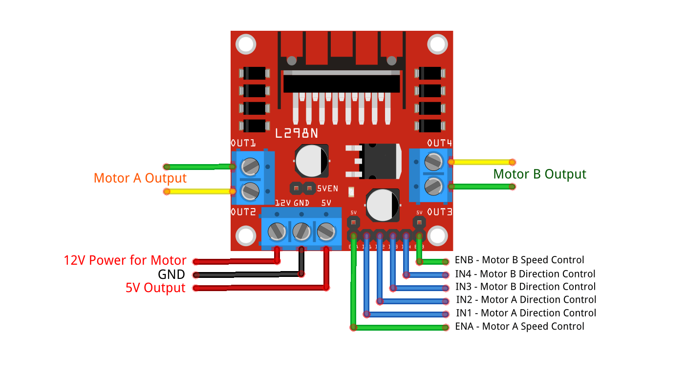
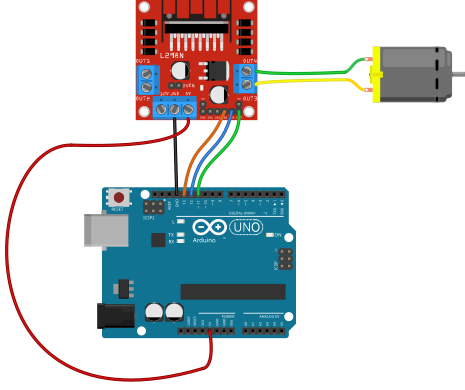

DC Motor + L298N Driver
DC मोटर + L298NA DC motor spins continuously (wheels, fans). The L298N H-bridge driver lets the Arduino control direction and speed without burning the board.
What it does · के गर्छ
A DC motor spins continuously (wheels, fans). The L298N H-bridge driver lets the Arduino control direction and speed without burning the board.
Pins on the component · कम्पोनेन्टका पिन
| Pin | Type | Role |
|---|---|---|
| ENA | PWM input | Speed control |
| IN1, IN2 | Digital | Direction (forward / reverse) |
| OUT1, OUT2 | Motor outputs | To motor terminals |
| 12V, GND | Motor power | Separate battery 7–12 V |
| +5V, GND (logic) | Logic supply | Often jumper ON — powers logic from onboard regulator |
Connect to Arduino Uno · UNO मा जडान
Example wiring (you may use other pins if you update the code). See Uno pinout.

| Component | Arduino Uno | Why |
|---|---|---|
| ENA | D5 (PWM) | analogWrite controls speed 0–255 |
| IN1 | D7 | Direction bit 1 |
| IN2 | D8 | Direction bit 2 |
| GND | GND | Must connect Uno GND to L298N GND |
Arduino code you need · आवश्यक कोड
Example use case · उदाहरण
Forward for 2 seconds — Robot drives forward then stops.
const int ENA = 5, IN1 = 7, IN2 = 8;
void setup() {
pinMode(ENA, OUTPUT);
pinMode(IN1, OUTPUT);
pinMode(IN2, OUTPUT);
}
void loop() {
digitalWrite(IN1, HIGH);
digitalWrite(IN2, LOW);
analogWrite(ENA, 200);
delay(2000);
analogWrite(ENA, 0);
delay(1000);
}